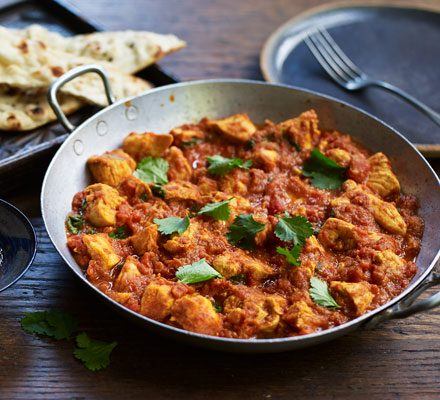

Chicken Balti

Description
Spiced chicken balti, this Indian takeaway classic is characteristically a meat (or veg) dish with a thick, spicy tomato-based sauce. Usually, it's heavy on the chilli heat with a little tanginess from the yoghurt that's added.
Ingredients
- 1 tbsp sunflower oil
- 2 large onions , thickly sliced
- 4 skinless chicken breasts
- 4 tbsp balti curry paste
- 200g quinoa
- 400g can chopped tomato
- 1l chicken stock
- 50g roasted salted cashew
- small bunch coriander , leaves chopped